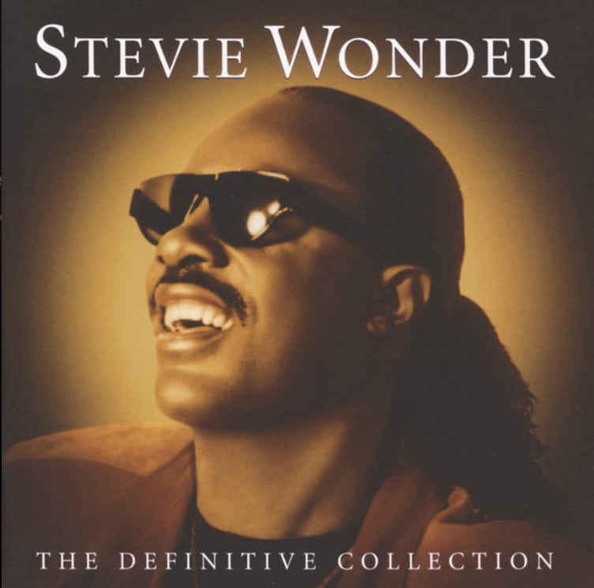
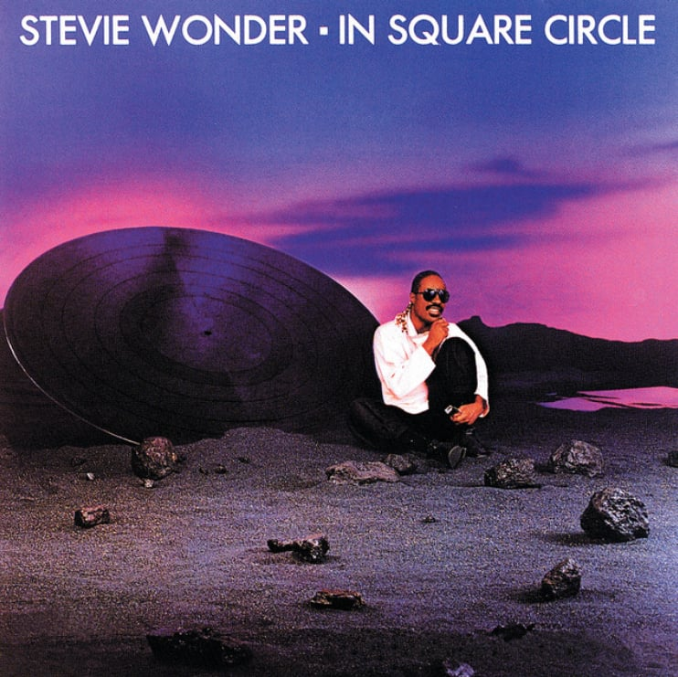

Top five / 01
Songs that
stay with me.
A personal soundtrack for late-night walks, long rides, and the moments that need a little extra color.



Top five / 01
A personal soundtrack for late-night walks, long rides, and the moments that need a little extra color.

